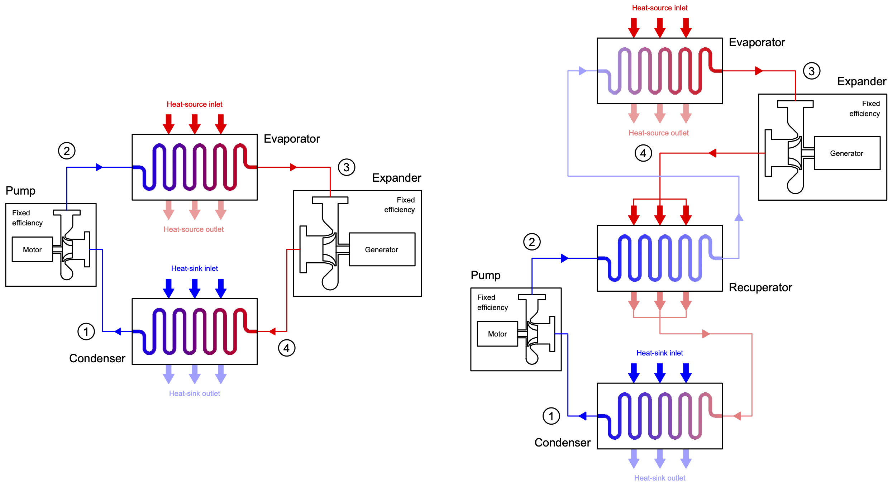

pocketORC is a steady-state design model for organic Rankine cycle (ORC) power plants that operates straight from the browser (and hence from the phone in your pocket). The underlying model is written in the Python programming language and the PyScript framework is used to call Python code directly from HTML.
pocketORC is intended to be used as a teaching aid to explore basic principles relating to ORC power systems, whilst also serving as a pocket calculator for people working within the ORC field. The current version combines the Peng-Robinson equation of state with a thermodynamic model of a recuperated ORC system and discretised heat exchanger sizing models. The user can vary cycle variables via the web form which returns performance data. The model enables single-point calculation, or parametric studies of a single variable.
If you know your way around an ORC system, then jump straight in using the form below. Alternatively, you can follow the lessons available in the left-hand menu. These will talk you through and introduce the main model inputs and variables.
Interested in finding out about the calculations that take place under the hood of pocketORC? Then why not download the theory guide here.
Thermodynamic properties are calculated using a specifically designed module based on the Peng-Robinson equation of state. Although this is not as accurate as state-of-the-art multi-parameter equations of state commonly used (e.g., CoolProp and REFPROP), the model is known to provide reasonable predictions for fluid properties, particularly in the vapour-phase region. In previous work, a maximum deviation in power output of 5.9% was found between cycle calculations completed using the Peng-Robinson equation of state and using REFPROP. This level of accuracy is considered sufficient for a tool whose primary purpose is teaching. For more information, please see the published paper:
A simple organic Rankine cycle (ORC) power system is based on four thermodynamic processes, each of which is carried out by a specific piece of equipment. The cycle is also a closed loop in that after carrying out the four process sequentially the properties of the circulating working fluid return to the original conditions. A schematic of this cycle is shown in the figure at the bottom of this section.
We start our cycle at the inlet to the pump, referenced as station 1, where the working fluid starts in a cold, liquid state at low pressure. The job of the pump is to increase the pressure of the liquid to a higher pressure, which is achieved via the addition of work using a motor.
After the pump, referenced as station 2, the high pressure liquid then enters the evaporator which uses the available heat source to heat up and evaporate the working fluid, thus generating vapour at a high temperature and pressure.
This vapour then moves to the expander inlet, referenced as station 3, where the fluid is expanded. During this process, the pressure of the working fluid reduces, and mechanical work is extracted by the expander. This mechanical work is converted to electricity using a generator.
The working fluid leaving the expander, referenced as station 4, is at low pressure but is still in a vapour state. The final process is to cool down and condense the working fluid using a condenser. This returns the working fluid back to its initial state. During this process, heat is rejected from the cycle to the available heat sink.
The efficiency of the simple ORC system can be improved with the addition of a recuperator. The job of this component is to use the heat contained within the working fluid leaving the expander in order to heat up the liquid leaving the pump. This reduces the amount of heat required from the heat source, and reduces the amount of heat rejected to the heat sink. This cycle is also reported in the figure below.

Schematics of a simple ORC system (left) and recuperated ORC system (right)
The general goal for an ORC designer is to design the system for a particular application. This generally corresponds to a known heat source and heat sink. The calculator assumes both the heat source and heat sink are defined as sensible fluid streams with a finite mass-flow rate and constant specific-heat capacity. Enter those details below.
As a first assumption it is generally acceptable to assume that key system components, such as the pump and expander, operate with a fixed isentropic efficiency. Enter assumptions for these below.
To optimise the performance of the ORC system, the ORC designer has a number of different levers to pull. This includes changing the working fluid (i.e., the fluid circulating within the system), alongside a number of different thermodynamic variables. You can select the working fluid, and provide values for the cycle variables below.
Working fluid:
* The expander inlet parameter can range between 0 and 2, and controls the expander inlet condition. For two-phase expansion set the value equal to the desired inlet vapour quality. A value between 1 and 2 corresonds to a superheated cycle, where the limits of 1 and 2 correspond to no superheat and maximum superheat respectively. For more information, take a look at Lesson 6.
Having now selected your set of variables, it's time to see how the cycle performs. Hit the button below to find out. The results in the table summarise key performance metrics, as well as the work or thermal load of each component. The UA values are an indicator of the heat exchanger requirements and the pinch points indicate the minimum temperature differences in each heat exchange process.
It is also useful to view the cycle on a thermodynamic plane of choice. You can choose between temperature-entropy, pressure-enthalpy and pressure-volume. In the resulting figures, the green region indicates the state points of the working fluid throughout the cycle. Where relevant, the heat source (red) and heat sink (blue) temperature profiles are superimposed onto the cycle.
Note: Negative pinch points (reported in red below) indicate unphysical heat exchange profiles, and therefore indicate infeasible ORC system configurations. In general, the best performance can be expected when the pinch points are minimised, but still positive. However, very low pinch points imply large heat transfer areas.
| Efficiency (cycle) [%] | 0 | Recup [kW] | 0 |
|---|---|---|---|
| Efficiency (exergy) [%] | 0 | UA (hot) [kW/K] | 0 |
| Mass flow [kg/s] | 0 | UA (cold) [kW/K] | 0 |
| Net [kW] | 0 | UA (recup) [kW/K] | 0 |
| Pump [kW] | 0 | Pinch (hot) [K] | 0 |
| Turbine [kW] | 0 | Pinch (cold) [K] | 0 |
| Heater [kW] | 0 | Pinch (rec.) [K] | 0 |
| Cooler [kW] | 0 |
| Pump inlet | Pump outlet | Recup-oulet (HP) | Saturated liquid (HP) | Saturated vapour (HP) | Expander inlet | Expander outlet | Recup-outlet (LP) | Saturated vapour (LP) | Saturated liquid (LP) | |
|---|---|---|---|---|---|---|---|---|---|---|
| Temperature [K] | 0 | 0 | 0 | 0 | 0 | 0 | 0 | 0 | 0 | 0 |
| Pressure [kPa] | 0 | 0 | 0 | 0 | 0 | 0 | 0 | 0 | 0 | 0 |
| Enthalpy [kJ/kg] | 0 | 0 | 0 | 0 | 0 | 0 | 0 | 0 | 0 | 0 |
| Entropy [kJ/(kg K)] | 0 | 0 | 0 | 0 | 0 | 0 | 0 | 0 | 0 | 0 |
| Density [kg/m³] | 0 | 0 | 0 | 0 | 0 | 0 | 0 | 0 | 0 | 0 |
Want to understand how the different cycle variables can influence performance? Then pick a variable from the drop-down box below, alongside the minimum and maximum values you want to consider, and hit run to populate the table. All other variables are assumed constant as defined earlier.
Remember, negative pinch points indicate unphysical heat exchange profiles, and therefore indicate infeasible ORC system configurations.
| Parameter: | Efficiency (cycle) [%] | Efficiency (exergy) [%] | Mass flow [kg/s] | Net [kW] | Pump [kW] | Turbine [kW] | Heater [kW] | Cooler [kW] | Recup.[kW] | UA (hot) [kW/K] | UA (cold) [kW/K] | UA (rec.) [kW/K] | Pinch (hot) [K] | Pinch (cold) [K] | Pinch (rec.) [K] |
|---|---|---|---|---|---|---|---|---|---|---|---|---|---|---|---|
| 0 | 0 | 0 | 0 | 0 | 0 | 0 | 0 | 0 | 0 | 0 | 0 | 0 | 0 | 0 | 0 |
| 0 | 0 | 0 | 0 | 0 | 0 | 0 | 0 | 0 | 0 | 0 | 0 | 0 | 0 | 0 | 0 |
| 0 | 0 | 0 | 0 | 0 | 0 | 0 | 0 | 0 | 0 | 0 | 0 | 0 | 0 | 0 | 0 |
| 0 | 0 | 0 | 0 | 0 | 0 | 0 | 0 | 0 | 0 | 0 | 0 | 0 | 0 | 0 | 0 |
| 0 | 0 | 0 | 0 | 0 | 0 | 0 | 0 | 0 | 0 | 0 | 0 | 0 | 0 | 0 | 0 |
| 0 | 0 | 0 | 0 | 0 | 0 | 0 | 0 | 0 | 0 | 0 | 0 | 0 | 0 | 0 | 0 |
| 0 | 0 | 0 | 0 | 0 | 0 | 0 | 0 | 0 | 0 | 0 | 0 | 0 | 0 | 0 | 0 |
| 0 | 0 | 0 | 0 | 0 | 0 | 0 | 0 | 0 | 0 | 0 | 0 | 0 | 0 | 0 | 0 |
| 0 | 0 | 0 | 0 | 0 | 0 | 0 | 0 | 0 | 0 | 0 | 0 | 0 | 0 | 0 | 0 |
| 0 | 0 | 0 | 0 | 0 | 0 | 0 | 0 | 0 | 0 | 0 | 0 | 0 | 0 | 0 | 0 |